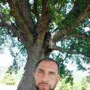

Στύση ακόμα και μετά την ηλικία των 60 ετών: Η Ένωση Ελλήνων Ειδικών Ερευνητών προτείνει στους άνδρες ένα αποτελεσματικό προϊόν για την αποκατάσταση της ισχύος
Μελέτες δείχνουν ότι αυτό το φάρμακο είναι 3–4 φορές πιο αποτελεσματικό και ασφαλέστερο από το Viagra.
Την άνοιξη του 2012, κάτι εξαιρετικό συνέβη στο Ευρωπαϊκό Συνέδριο Σεξολόγων και Εμπειρογνωμόνων. Όλοι στην αίθουσα σηκώθηκαν όρθιοι και για 10 λεπτά χειροκροτούσαν τον επιστήμονα που στεκόταν στη σκηνή. Ήταν ένας επιστήμονας και ουρολόγος από την Ελλάδα, ο Ηλίας Χατζής. Αυτός και μια ομάδα επιστημόνων δημιούργησαν ένα ειδικό προϊόν που μπορεί να σώσει εντελώς τους άνδρες από προβλήματα στύσης που προκαλούνται από ωχρινοτρόπους και φυλλοδιεγερτικές ορμόνες που παράγονται από την υπόφυση.
Ηλίας Χατζής, Έλληνας ουρολόγος και χειρουργός, γενικός ιατρός, καθηγητής, εφευρέτης του μοναδικού προϊόντος για την αποκατάσταση της στύσης. Πέθανε το 2014 λίγο μετά τη νίκη του.
Αν και ο ξαφνικός του θάνατος δεν έδωσε στον επιστήμονα την ευκαιρία να ξεκινήσει την παραγωγή του προϊόντος, οι συνεχιστές του το έκαναν μετά από 9 χρόνια. Το 2021, το νέο προϊόν πέρασε όλες τις κλινικές δοκιμές, τα αποτελέσματα των οποίων αποδεικνύουν για άλλη μια φορά την υψηλή του αποτελεσματικότητα γιατί βοηθά 96 στους 100 άνδρες να αποκαταστήσουν πλήρως τη στύση και το επιτυγχάνει σε μεγάλες ηλικίες.
Δεδομένου ότι πρόκειται για ένα προϊόν που παράγουμε μόνοι μας, η Ένωση Ελλήνων Ειδικών Ερευνητών αποφάσισε να το διανείμει στα φαρμακεία χωρίς επιπλέον κόστος σε λογική τιμή. Όποιος το επιθυμεί μπορεί να αγοράσει αυτό το φάρμακο σε ΜΕΙΩΜΕΝΗ ΤΙΜΗ.
Πλησιάζοντας στην ηλικία των 40 ετών, το 73% των ανδρών γίνονται ανίκανοι.
Οι γιατροί λένε ότι, τα τελευταία δέκα χρόνια, τα προβλήματα στύσης στους άνδρες εμφανίζονται όλο και πιο νεαρές ηλικίες. Οι αιτίες της πρώιμης μείωσης της σεξουαλικής απόδοσης είναι πολύ γνωστές – καθιστική ζωή, βλαβερές συνήθειες, ακατάλληλη διατροφή, μόλυνση του περιβάλλοντος...
Και λίγοι άνθρωποι σκέφτονται τι είδους προβλήματα στη ζωή ενός άνδρα μπορεί να προκληθούν από προβλήματα στη σεξουαλική ζωή του.
Με τη μακροχρόνια ανικανότητα, συσσωρεύεται στα αιμοφόρα αγγεία στα γεννητικά όργανα αθηρωματική πλάκα, η οποία με την πάροδο του χρόνου οδηγεί στην πλήρης ανικανότητας.
Στάδια ανικανότητας και οι συνέπειές της
1ο στάδιο
Μερικές φορές δεν υπάρχει στύση, για παράδειγμα μετά
την κατανάλωση αλκοόλ ή χωρίς καμία αιτία. Μερικές φορές δεν έχουν «διάθεση για έρωτα».
Οι περισσότεροι άνθρωποι το αποδίδουν στη σκληρή δουλειά, το άγχος... Και αυτό είναι
μόνο το πρώτο σημάδι για το ότι θα χειροτερέψει με τον καιρό.
2ο στάδιο
Συχνότερη απουσία στύσης. Τα γεννητικά όργανα μπορεί να
εξασθενούν κατά τη σεξουαλική επαφή ή όταν φοράτε προφυλακτικό. Αυτός είναι ο λόγος για
τον οποίο ένα άτομο που βρίσκεται σε αυτή την κατάσταση αρχίζει να σκέφτεται το
πρόβλημα, αλλά περιορίζεται στη χρήση του Viagra αντί να λύσει το πρόβλημα.
3ο στάδιο
Οι στύσεις συμβαίνουν περιοδικά. Η επιθυμία για σεξ
μειώνεται απότομα. Ο άντρας γίνεται οξύθυμος, χάνει διάθεση και επιθυμία να κάνει
οτιδήποτε. Υπάρχουν οικογενειακά προβλήματα, και αυτά συχνά εκδηλώνονται με
ενδοοικογενειακή βία, μοιχεία των συζύγων, καταστάσεις που μπορούν να οδηγήσουν σε
διαζύγιο.
4ο στάδιο
Πλήρης ανικανότητα. Ακόμα και το Viagra δεν βοηθάει.
Έως και το 91% των ανδρών είναι ελεύθεροι σε αυτό το στάδιο, επειδή οι γυναίκες σπάνια
ζουν με ανίκανους άνδρες, και αν το κάνουν, τότε υποφέρουν. Η κατάθλιψη αναπτύσσεται
καθώς και διάφορα προβλήματα υγείας. Το σώμα μας είναι δομημένο με τέτοιο τρόπο που η
βασική του λειτουργία είναι η αναπαραγωγή. Μόλις χαθεί αυτή η λειτουργία, το σώμα
αρχίζει γρήγορα να φθείρεται.
Με την έλλειψη στύσης για μεγάλο χρονικό διάστημα, η ροή του αίματος στα πυελικά όργανα επιβραδύνεται, γεγονός που οδηγεί στην ανάπτυξη πολλών επικίνδυνων ασθενειών.
– Καρκίνος προστάτη σε άνδρα 48 ετών. Ο καρκίνος του προστάτη είναι η πιο κοινή αιτία θανάτου (έως 88%) μεταξύ των ατόμων με ανικανότητα. Ο καρκίνος εμφανίζεται λόγω της απουσίας φυσιολογικής ροής αίματος στα πυελικά όργανα και της συσσώρευσης πύου στον ίδιο τον προστάτη. Πραγματική απεικόνιση!
– Σήψη (θάνατος) των γεννητικών οργάνων ενός 44χρονου άνδρα που σχετίζεται με τη μακροχρόνια απουσία στύσης. Έπρεπε να γίνει επείγουσα επέμβαση, αλλά η δηλητηρίαση του αίματος δεν μπόρεσε να σταματήσει και ο άνδρας πέθανε.
– Πέτρες στα νεφρά. Οι πέτρες στα νεφρά αναπτύσσονται επίσης λόγω διαταραχών του κυκλοφορικού στα όργανα της πυέλου. Μια πολύ επώδυνη κατάσταση που συχνά απαιτεί επείγουσα χειρουργική επέμβαση για την αφαίρεση λίθων ή ακόμα και ολόκληρου του νεφρού.
Επειδή οι στύσεις μπορεί να απουσιάζουν εντελώς, πολλοί άνδρες προσπαθούν να λύσουν τέτοια προβλήματα στύσης μόλις εμφανιστούν. Αλλά μέχρι πρόσφατα, η πλήρης αποκατάσταση της στύσης δεν ήταν δυνατή επειδή τα υπάρχοντα προϊόντα (για παράδειγμα, το Viagra) βελτιώνουν την κατάσταση ΜΟΝΟ ΚΑΤΑ ΤΗ ΧΡΗΣΗ.
Το μόνο προϊόν που δημιούργησαν Έλληνες επιστήμονες υπό την ηγεσία του Ηλία Χατζή, επανέφερε την ΙΣΧΥ όπως συμβαίνει φυσικά (όπως στους υγιείς άνδρες) χωρίς τη χρήση φαρμάκων.
Ρωτήσαμε έναν γιατρό. Ο καθηγητής Πέτρος Βαρσάλης – Επικεφαλής του Τμήματος Ουρολογίας, μας μίλησε για το νέο προϊόν.
«Πρόκειται για την πιο περίπλοκη αλλά και την πιο απαραίτητη εφεύρεση του Επιστημονικού Ερευνητικού Ινστιτούτου Ουρολογίας της Αθήνας»
– Δρ Βαρσάλη, πείτε μας με απλά λόγια, γιατί υπάρχει μείωση της ισχύος και πώς σταματά αυτή η διαδικασία;
Μια από τις βασικές λειτουργίες κάθε ανθρώπου είναι η αναπαραγωγή. Τα σώματά μας δημιουργήθηκαν για να κάνουν αυτή τη διαδικασία. Κάθε άντρας έχει 3 τυπικές περιόδους. Ανάπτυξη, ικανότητα αναπαραγωγής και αποδυνάμωση. Ο χρόνος που απαιτείται εξαρτάται από το επίπεδο τεστοστερόνης στο αίμα. Η μέγιστη γόνιμη περίοδος είναι όταν είναι πάνω από 11 nmol/l. Με την ηλικία (μετά τα 45), παρατηρείται πτώση της τεστοστερόνης και οι άνδρες μπαίνουν στην τρίτη περίοδο. Αυτό συμβαίνει υπό κανονικές συνθήκες και είναι ουσιαστικά μια φυσική διαδικασία.
Όμως ο σύγχρονος τρόπος ζωής, και ειδικά οι σημερινοί άντρες που κινούνται λίγο, έχει οδηγήσει στο σημείο που τα επίπεδα τεστοστερόνης αρχίζουν να πέφτουν ασυνήθιστα νωρίτερα από το συνηθισμένο. Μετά την ηλικία των 30 ετών, αυτό το επίπεδο ήταν κατά μέσο όρο 5 nmol/l στο 93% των ανδρών που εξετάσαμε, δηλαδή δύο φορές λιγότερο από το κανονικό!
– Πώς μπορεί το να βοηθήσει τους άνδρες;
Είναι σημαντικό να το καταλάβουμε ότι το δεν είναι διεγερτικό. Φτιάχτηκε για κάτι άλλο, και αυτό είναι να ενεργοποιήσει την παραγωγή τεστοστερόνης στο σώμα και επομένως δεν αντιπροσωπεύει τίποτα ασυνήθιστο ή επικίνδυνο για τη λειτουργία του κυκλοφορικού συστήματος στη βουβωνική χώρα, όπως το Viagra και παρόμοια προϊόντα και άλλες χημικές ουσίες.
Οι δραστικές ουσίες που αποτελούν μέρος του συμβάλλουν στην ενεργή παραγωγή ωχρινοτρόπων και φυλλοδιεγερτικών ορμονών που δρουν στην υπόφυση. Και η υπόφυση αυξάνει επιπλέον την παραγωγή της τεστοστερόνης.
Το έχει πολύπλοκη επίδραση στο σώμα. Δεν θέλω να μιλήσω για τις λεπτομέρειες των χημικών αντιδράσεων που λαμβάνουν χώρα στο σώμα, γιατί λίγοι θα τα καταλαβαίνουν. Θέλω απλώς να επισημάνω ότι το ενισχύει άμεσα τη στύση μετά τη χρήση και ταυτόχρονα επιτρέπει την αποκατάσταση της λειτουργίας της υπόφυσης, πράγμα που σημαίνει ότι αποκαθιστά τη φυσική στύση που εμφανίζεται μόνη της χωρίς να απαιτείται ιατρική θεραπεία. Ακόμη και σε άνδρες άνω των 50–60 ετών. Με το μπορείτε να έχετε σταθερή στύση ακόμα και σε μεγάλη ηλικία.
Από μόνη της, η τεστοστερόνη είναι χρήσιμη για τους άνδρες και η έλλειψή της οδηγεί στη γήρανση του σώματος και στην ανάπτυξη διαφόρων ασθενειών. Στην ήπειρό μας, η τεστοστερόνη συνταγογραφείται σε άνδρες άνω των 30 ετών.
Τα κύτταρα του Leydig παράγουν τεστοστερόνη, ένα «σήμα» παραγωγής στέλνεται από την υπόφυση και είναι ο στόχος ενός νέου εγχώριου προϊόντος – του .
– Η ομαλοποίηση της παραγωγής τεστοστερόνης έχει μια πολύ απλή λύση, σωστά; Το είχε σκεφτεί κανείς πραγματικά αυτό πριν;
Η λύση είναι απλή. Αλλά η εργασία με αυτή τη διαδικασία δεν είναι τόσο απλή. Ένα προϊόν που μπορεί να δράσει έμμεσα στην υπόφυση ανακάλυψε ο Ηλίας Χατζής. Εκείνο το διάστημα, δημιουργήσαμε ένα ρόφημα με βάση αυτό. Σήμερα, το είναι το πιο αποτελεσματικό μέσο για την καταπολέμηση της ανδρικής ανικανότητας. Το Viagra δεν έχει καμία τύχη. Και είναι επίσης σημαντικό ότι το δεν προκαλεί παρενέργειες. Ως εκ τούτου, έχει ένα πλεονέκτημα έναντι των προϊόντων που περιέχουν σιλδεναφίλη.
– Έχουν πραγματοποιηθεί κλινικές δοκιμές του ; Τι έχειξαν;
Κλινικές δοκιμές έχουν διεξαχθεί αρκετές φορές και κάθε φορά είχαν εκπληκτικά αποτελέσματα.
– Είναι αλήθεια ότι σύμφωνα με το τρέχον πρόγραμμα, κάθε άντρας μπορεί να παραγγείλει το σε μειωμένη τιμή;
– Ναι, σωστά. Αυτή τη στιγμή, το Ινστιτούτο Ουρολογίας, μαζί με τη Ελληνική Ένωση Ερευνητών, διανέμει σε μειωμένη τιμή στο πλαίσιο του κοινού προγράμματος «Ανδρική Υγεία».
Κατά την προσωπική μου άποψη, αυτό είναι ένα πολύ σημαντικό και χρήσιμο ξεκίνημα γιατί τα προβλήματα στύσης εμφανίζονται όλο και περισσότερο στους άνδρες και συχνά οδηγούν σε οικογενειακά προβλήματα και απώλεια της ανδρικής υγείας. Νομίζω ότι αυτό το προϊόν θα σώσει πολλές οικογένειες, αλλά θα μειώσει επίσης τον αριθμό των ανδρών που χρησιμοποιούν διεγερτικά όπως το Viagra, τα οποία κάνουν περισσότερο κακό παρά καλό.
– Πώς μπορώ να λάβω συνταγή για αυτό το προϊόν σε μειωμένη τιμή; Ποιες είναι οι προϋποθέσεις;
- 1. Πρέπει να ζεις στην Ελλάδα.
- 2. Να λάβεις μέρος στην κλήρωση για να λάβετε έκπτωση για αυτό το προϊόν.
- 3. Σε 5–7 ημέρες (χρόνος παράδοσης), θα λάβεις την παραγγελία σου.
«Στη ζωή κάθε άνδρα, η ανδρική υγεία δεν μπορεί να διατηρηθεί για πάντα, αλλά θα υπάρξουν μερικές μειώσεις από καιρό σε καιρό. Η φυσιολογική υγεία των ανδρών υποφέρει αρκετά σοβαρά. Γι' αυτό οι άνδρες όχι μόνο είναι νευρικοί και εσωστρεφείς, αλλά αυτό αποτελεί επίσης απειλή για τον γάμο και την οικογένεια. Το είναι ένα μυστικό που βοηθά στην επίλυση όλων των προβλημάτων των ανδρών. Χρειάζεται μόνο να πάρετε 1 δισκίο περίπου 30 λεπτά πριν το σεξ. Ακόμα κι αν δεν πάρετε το χάπι λίγο πριν το σεξ, το πέος θα λειτουργεί για πάνταπάντα. Δεν χρειάζεται να διατηρήσετε τη στύση σας με χάπια μετά την αποκατάσταση των επιπέδων τεστοστερόνης.»
ΠΡΟΣΟΧΗ, Η ΤΕΛΕΥΤΑΙΑ ΜΕΡΑ ΓΙΑ ΝΑ ΠΑΡΕΤΕ ΤΟ ΣΕ ΜΕΙΩΜΕΝΗ ΤΙΜΗ ΕΙΝΑΙ 04.11.2022. Μετά την ημερομηνία αυτή, το προϊόν θα είναι διαθέσιμο μόνο στην κανονική τιμή του.
Αν θέλετε να αποκτήσετε ένα νέο προϊόν αποκατάστασης της στύσης κατά την περίοδο των εκπτώσεων, εγγραφείτε τώρα στο πρόγραμμα!
Σχόλια:
Θάνος Λούπης
Θα ήθελα να ευχαριστήσω τον Δρ Βαρσάλη που συνέστησε ένα καλό προϊόν για εμάς τους άντρες, ώστε να μην μας αποκαλούν «ανίκανους».
Βασίλης Σ.
Αφού διάβασα αυτό το άρθρο, αμέσως ενδιαφέρθηκα και άρχισα να διαβάζω για αυτό το και βρήκα πολύ καλές κριτικές. Το παρήγγειλα σε αυτή τη σελίδα
Φίλιππος Ανδρέου
Μόλις πήρα το πακέτο μου, θα το δοκιμάσω τώρα όσο είναι φρέσκο, χαχαχαα
Κώστας Κακρίδης
Νομίζω ότι αυτό το είναι πολύ καλό. Το χρησιμοποίησα στις αρχές της χρονιάς. Η δύναμή μου βελτιώθηκε και μπορώ να κάνω ξανά σεξ. Η γυναίκα μου σταμάτησε να γκρινιάζει. Πραγματικά τρελαίνονται αν δεν τους φτάνει. Η οικογένειά μας ζει ξανά αρμονικά. Πριν από αυτό, σκεφτόμασταν να πάρουμε διαζύγιο. Συνιστώ το σε όλους, θα σώσει τον γάμο σας.
Νίνα Β.
Ο σύζυγός μου είναι σχεδόν 40 και η κατάσταση άρχισε να χειροτερεύει λίγο. Πρέπει να ομολογήσω ότι σκέφτηκα να πάω με άλλους άντρες, αλλά μια φίλη μου είπε για το και το αγόρασα κρυφά για τον άντρα μου. Δεν περίμενα ότι θα είχε τέτοιο αποτέλεσμα (κάθε βράδυ). Τα πάντα είναι καλά με τον άντρα μου τώρα.
Ορέστης Μ.
Αυτή το επιστημονικό προϊόν χτυπάει τη ρίζα του προβλήματος. Θα ήταν κρίμα να μην το δοκιμάσω
Μιχάλης Αποστόλου
Χρησιμοποιώ αυτό το εδώ και μια εβδομάδα και η γυναίκα μου τελειώνει 2–3 φορές κάθε βράδυ, το εργαλείο μου είναι τόσο δυνατό που η γυναίκα μου το φοβάται λίγο.
Μάρκος
Η τεστοστερόνη είναι μια σημαντική ορμόνη και το χαμηλό της επίπεδο μπορεί να προκαλέσει προβλήματα στη σεξουαλική ζωή. Το άρθρο είναι καλό και πειστικό, οπότε αγόρασα το σε αυτή τη σελίδα και μπορώ να το κάνω 3–4 φορές την εβδομάδα με τη γυναίκα μου.
Κατερίνα
Το είδα στην τηλεόραση και βρήκα πολλές πληροφορίες για αυτό το προϊόν. Τι πιστεύετε; Να το αγοράσω για τον άντρα μου;
Λουκάς
Πείτε αντίο στη στυτική δυσλειτουργία σε 3 εβδομάδες. Το προτείνω σε όλους. Το μόνο προϊόν που λειτουργεί πραγματικά.
Σταμάτης
Αισθάνομαι νεότερος μετά τη χρήση αυτού του .
Βάσω Π.
Το αποτέλεσμα είναι υπέροχο και κάθε γυναίκα που έχει δεν χρειάζεται να ανησυχεί ότι ο άντρας της θα ξεχνάει το σεξ κάθε βράδυ, κορίτσια, είμαι τόσο χαρούμενη.
Τίνα
Ο σύζυγός μου είναι σωματικά πολύ αδύναμος και νιώθω απαίσια εξαιτίας αυτού. Προσπαθούσα να βρω μια λύση και ανακάλυψα το το οποίο έχει πολύ υψηλή βαθμολογία στο διαδίκτυο. Παρήγγειλα αμέσως 2 πακέτα για να δοκιμάσει ο άντρας μου. Η παράδοση έγινε γρήγορα και όλα προστατεύονται από την άποψη της συσκευασίας. Περιμένω να δω αν θα βελτιωθεί η αρρενωπότητά του, θα το δοκιμάσουμε και για εσάς.
Μαρία
Ευχαριστώ! Είδα μια εκπομπή για την ανδρική υγεία. Ανέφεραν αυτό το προϊόν. Πολλοί ξένοι ειδικοί το προτείνουν.